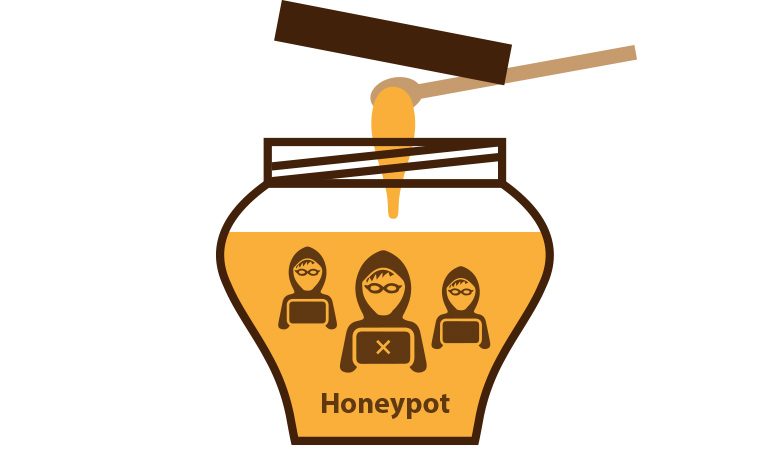

Introducción a las honeynets y su importancia en la seguridad de redes.
En los últimos años, ha habido un notable aumento en los ataques e intrusiones informáticas a través de Internet. Los atacantes, a menudo considerados expertos en informática, utilizan herramientas avanzadas y técnicas sofisticadas, incluyendo puertas traseras, para acceder a sistemas ajenos. Contrario a la creencia popular de que solo se atacan sistemas con información importante, la mayoría de los ataques en Internet buscan víctimas fáciles y no sistemas específicos. Los atacantes modernos no necesariamente necesitan conocimientos profundos, ya que utilizan herramientas disponibles en Internet que son fáciles de manejar. La creciente frecuencia de estos ataques, junto con el aumento de vulnerabilidades en sistemas operativos y aplicaciones, hace que cualquier sistema conectado a Internet sea una potencial víctima. Esto subraya la necesidad de herramientas para detectar y analizar tanto las vulnerabilidades como las técnicas de ataque utilizadas.

Por otro lado, en el mundo digital, que siempre esta en constante evolución, la ciberseguridad se ha convertido en una prioridad fundamental para individuos, empresas y gobiernos. Una de las estrategias más innovadoras y efectivas para proteger los sistemas informáticos y las redes de las amenazas cibernéticas es el uso de "honeypots" y "honeynets". Estas herramientas forman parte de una metodología de seguridad proactiva, diseñada no solo para defender sino también para estudiar y comprender las tácticas de los atacantes.
Para comprender mejor que es una honeynet, comenzaremos definiendo el concepto de Honeypot
Honeypots: Cebo Digital para la Ciberseguridad
Un "honeypot" es esencialmente una trampa cibernética. Este sistema informático es deliberadamente configurado para parecer vulnerable y atractivo para los hackers. Su principal objetivo no es bloquear o prevenir ataques, sino atraerlos. Al hacerlo, los honeypots permiten a los expertos en seguridad capturar, analizar y comprender los métodos de ataque, identificar nuevas vulnerabilidades y desarrollar estrategias para fortalecer las defensas contra amenazas futuras. Los honeypots pueden variar en complejidad, desde simples trampas que registran intentos de acceso no autorizados hasta sistemas altamente interactivos que simulan redes de producción completas.
Su funcionamiento está basado en tres simples conceptos:
-
Un honeypot no es un sistema de producción y, por tanto, nadie debería tratar de comunicarse con él. No habrá falsos positivos.
-
Cualquier tráfico que tenga por destino el honeypot será sospechoso de ser un sondeo o un ataque.
-
Cualquier tráfico que tenga por origen el honeypot significará que el sistema ha sido comprometido.
Este tipo de herramienta puede servir de ayuda en la prevención de ataques, utilizandose para desalentar al atacante haciendo que pierda su tiempo tratando de entrar en un sistema en el que no va encontrar información de provecho; para detectar y recopilar información detallada sobre los ataques que vayan dirigidos contra los servicios que ofrecen; y para la captura y el análisis de intrusiones con la finalidad de aprender las distintas técnicas y herramientas que utilizan los atacantes para llevar a cabo sus acciones, y para descubrir las vulnerabilidades buscadas por los intrusos y los motivos que les lleva a tratar de atacar el sistema.